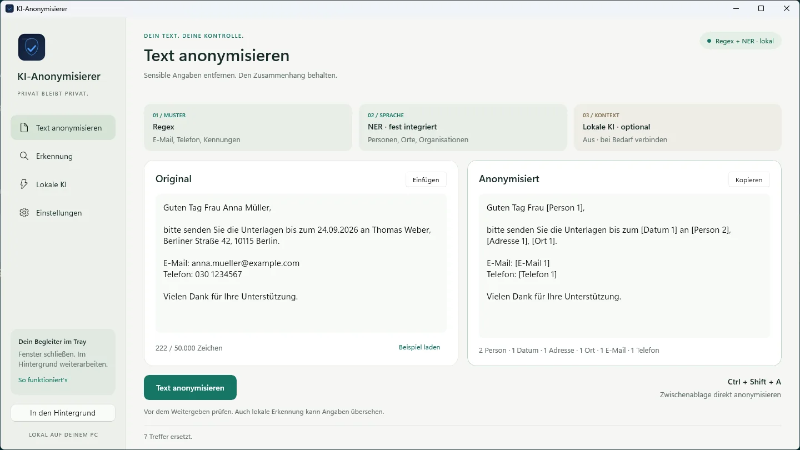
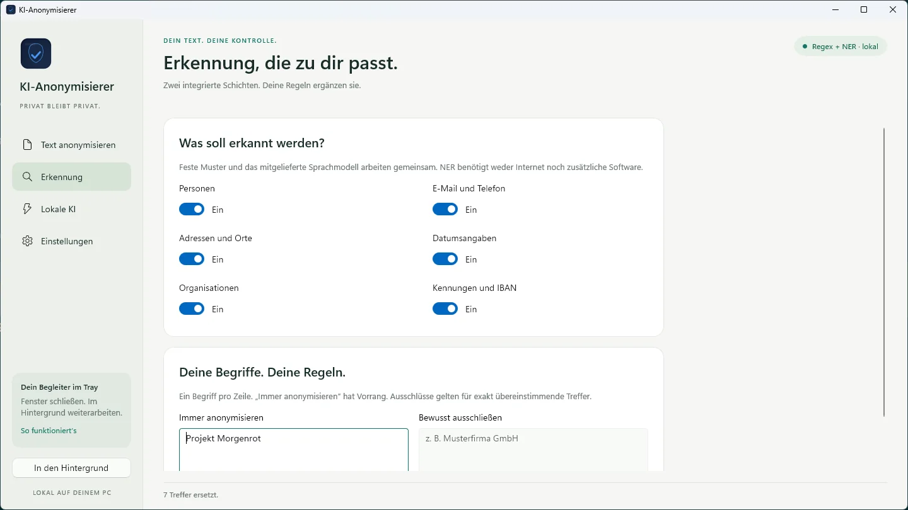

Windows-App · für Ihren Windows-Alltag
Lokale Anonymisierung für Ihren Windows-Alltag.
Regex, integrierte Namenserkennung und eine optionale lokale KI-Schicht, direkt auf Ihrem PC. Erreichbar über Tray-Symbol, Editor und Tastenkürzel, ohne dafür einen Server einzurichten.
- x64 und ARM64
- Tray-App
- Regex + NER
- KI optional

Kopieren. Kürzel. Weiterarbeiten.
- StrgC
Text kopieren
Text in einer beliebigen Anwendung markieren und wie gewohnt kopieren.
- Strg⇧A
Anonymisieren
Erkannte Angaben werden durch Platzhalter wie [Person 1] oder [E-Mail 1] ersetzt.
- StrgV
Prüfen und einfügen
Im Editor sehen Sie Original und Ergebnis nebeneinander. Die Endkontrolle bleibt bei Ihnen.
Drei Schichten, ein schneller Ablauf
Regex
E-Mail-Adressen, Telefonnummern, Datumsangaben, IBAN und weitere Kennungen. Eigene Begriffe festlegen oder ausschliessen.
NER, fest integriert
Findet Personen, Orte und Organisationen, ohne Internet und ohne zusätzliche Software.
Lokale KI, optional
Kleines Modell direkt in der App einrichten oder Ollama bzw. LM Studio anbinden.
Tray, Editor, Tastenkürzel
Klick aufs Tray-Symbol öffnet den Editor, Rechtsklick zeigt schnelle Aktionen.
Safeguard
Prüft die Zwischenablage auf Wunsch lokal auf sensible Angaben und weist auf Treffer hin.
Rückführung
Platzhalter der letzten Sitzung wieder zuordnen, höchstens fünf Minuten im Arbeitsspeicher.
Die echte App

Funktionsgrenze
Die Windows-App verarbeitet Text, keine Bilder oder Screenshots. Die zusätzliche kleine KI ist eine experimentelle Ergänzung und garantiert keine vollständige Erkennung. Einrichtungsdownloads benötigen eine Internetverbindung.
Häufige Fragen
Werden meine Texte hochgeladen?
Nein. Die Anonymisierung läuft auf Ihrem PC, ohne Anonymisierungsserver.
Brauche ich Ollama oder LM Studio?
Nein. Regex und NER sind fest integriert. Für die optionale KI-Prüfung können Sie ein kleines Modell in der App einrichten oder eine vorhandene Installation anbinden.
Was ist der Unterschied zum Windows-Client?
Die Windows-App erkennt lokal auf dem PC. Der Windows-Client nutzt stattdessen einen zentralen KI-Anonymisierer Server und ist für Teams gedacht.
Ist die Mac-App enthalten?
Nein. Windows, Mac und iPhone/iPad sind getrennte Käufe.